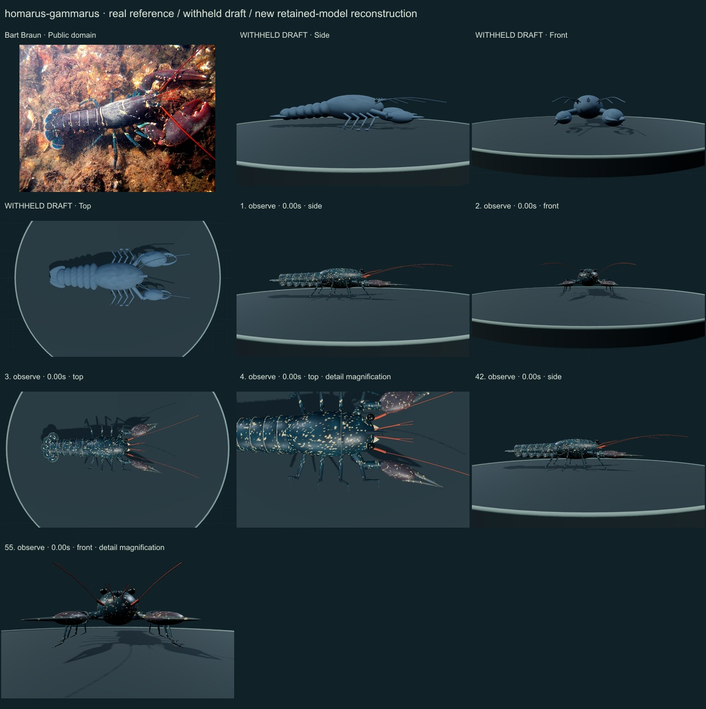
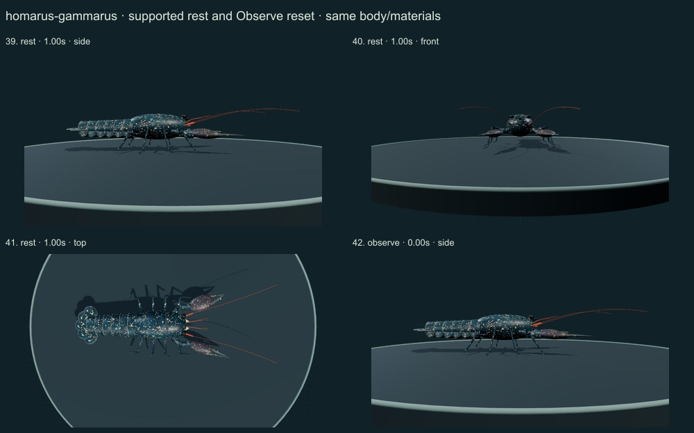
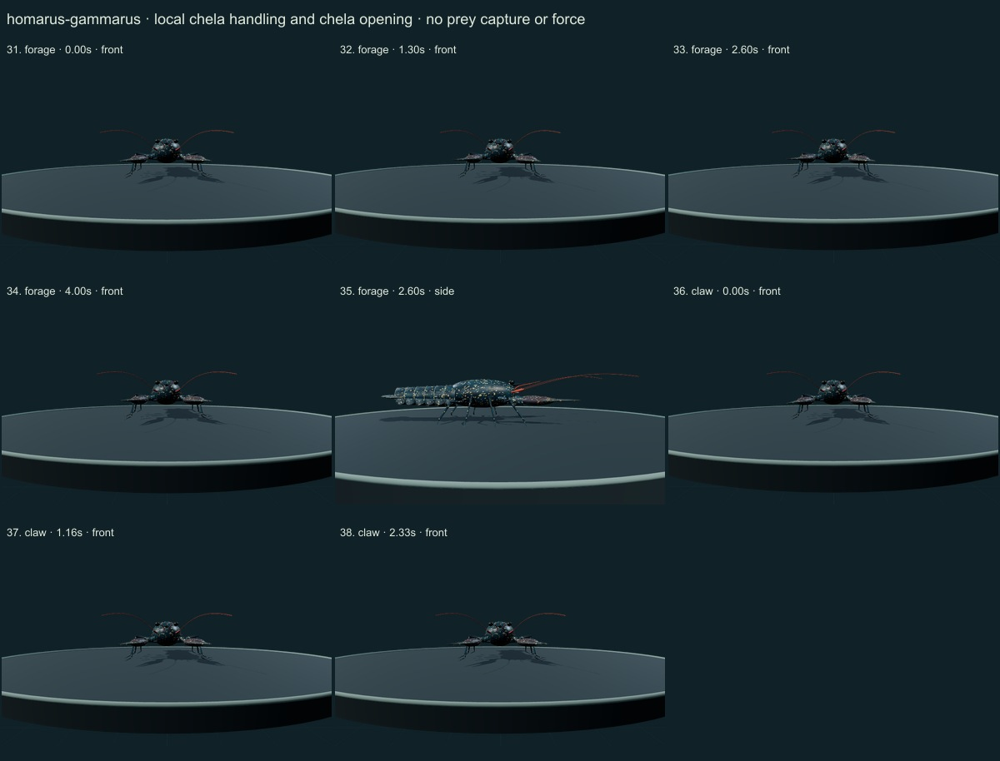
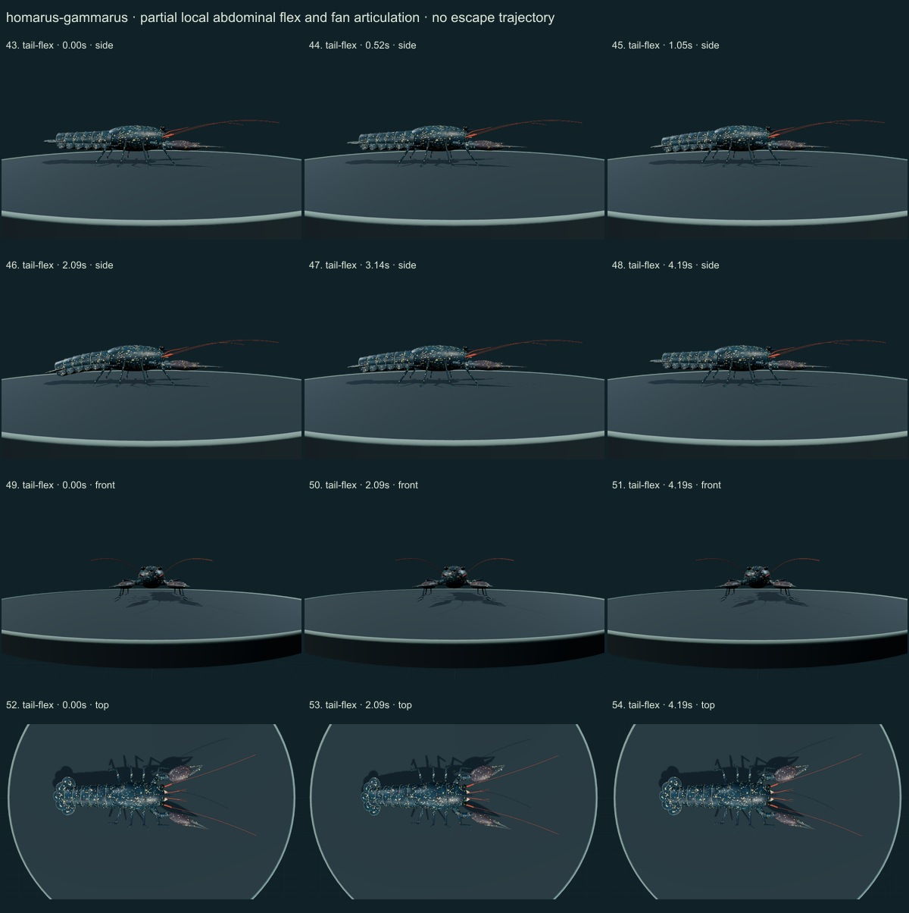
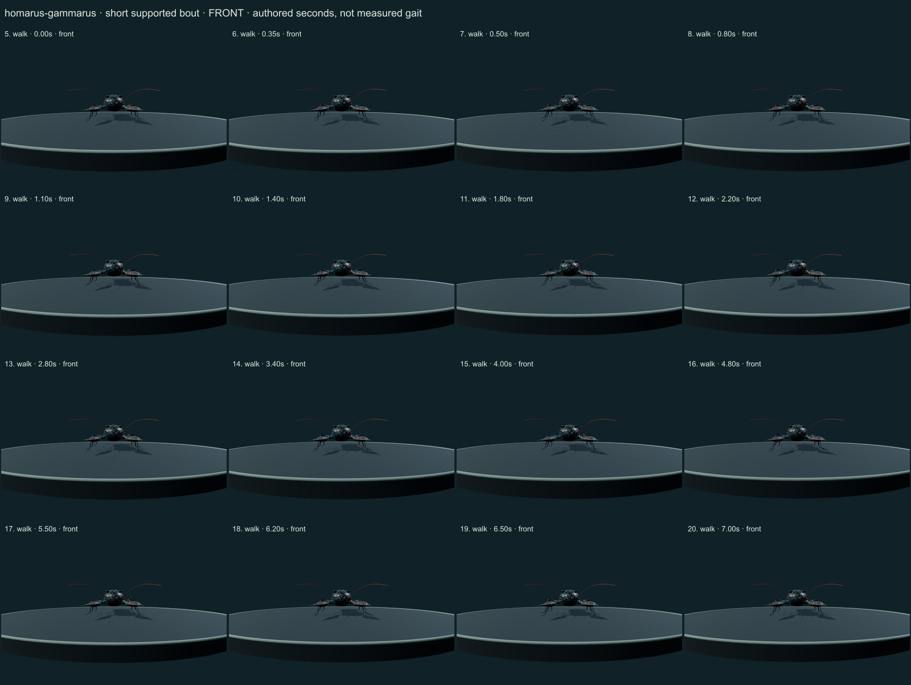
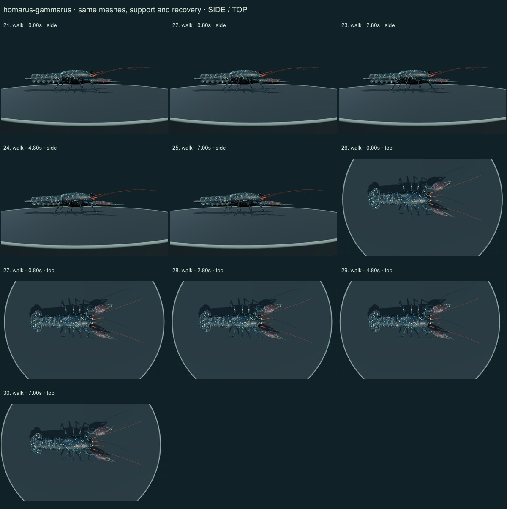

PhenoVoxel Archive · v0.6.20 · October 24, 2026
European lobster · individual initial correction
This three-species release reaches 265 after verified publication. 35 saved drafts remain withheld; 285 species remain to 550, including 250 without saved drafts. Release register. Fine anatomy and biological dynamics remain partial, unmeasured and independently unvalidated.
The authentic Bart Braun public-domain photograph and selected actual FAO figures were compared: PDFpage8 printed57 Fig104/105, page11 printed60 Fig110. The former draft's parser page offsets are corrected. Related H.americanus walking context is from Macmillan1975's PubMed abstract only; no full experimental record or species-measured H.gammarus gait was imported.
Bart Braun · Public domain. Bart Braun source labels a European lobster near Den Osse; public-domain authentic dark blue animal with pale speckles. Illumination, sex, proportions and native distribution are not determined from this single photo. Resized inside 1000 px, flattened and JPEG encoded; no generative alteration.
Exact source/license/download/local checksums remain in the data. Photograph identity and capture conditions are not independently re-established. Generated photographs are not used.
A continuous robust carapace, unequal naked crusher/cutter palms, shorter crusher fingers, a spiny rostrum without a ventral tooth, eight jointed walking limbs including small P2/P3 chelae, six overlapping abdominal plates and a five-part tail fan replace the oval/rod draft.
Selected dark blue cuticle, restrained cream speckles, reddish palms and antennae, pale seam edges and original curved surfaces remain on the same retained model through all actions.
Remaining: Exact body ratios, rostral teeth, orbital/buccal plates, cutting dentition, joint axes, telson/uropod struts and setal fields remain unmeasured or incomplete. Palms, dorsal grooves and pleurae are still simplified. First sex-modified pleopods are not reconstructed. The source photo does not establish sex, optics or the entire species' variation.
A short authored forward supported bout, local chela/antennule handling, finger opening, quiet support and partial six-joint abdominal/fan flex retain the same meshes. Pleopod pairs2–5 have simple local articulation; no measured escape, sensory function, ingestion or hydrodynamics.
No measured coordinates, natural playback rate, joint limits, forces, fluid dynamics, muscle, food contact, ingestion, sensory physiology or independent biological validation. Fixed-length/support checks establish internal software consistency only.
55 actual final nonblank side/front/top, enlarged and action/posture states inspected individually on labelled sheets against the authentic photograph and scoped sources. Superseded frames excluded. Qualitative author assessment, not independent expert certification.






No 90% accuracy score, measured biological rate, physiological simulation or independent specialist certification is asserted. Software checks are not empirical validation. The prior 262 species objects and credited wolf/tiger behavior meshes are unchanged. Original geometry/material/controller code is MIT; real reference photos retain their individual licenses. Primary-paper figures were consulted where accessible and linked, not redistributed. Modern taxonomy is retained; Protista/Monera are legacy reporting conveniences and recorded occurrences are not native-range boundaries.
Per-frame findings, source scopes and checksums · Live model